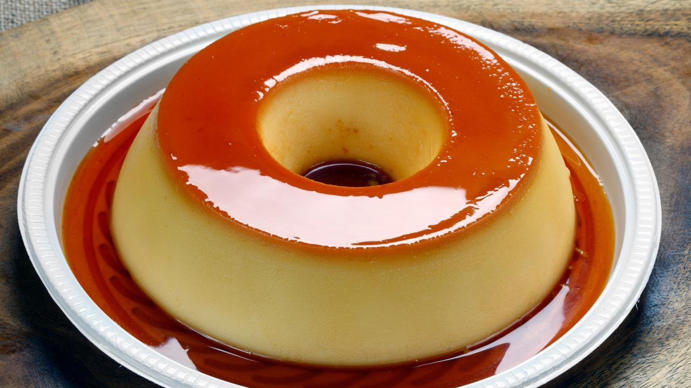

Pudim

Description
Pudim is a classic dessert enjoyed worldwide. It is known for its smooth texture and irresistible sweetness.
Typically, it's made from a mixture of milk, eggs, sugar, and vanilla essence, which is cooked until it sets.
The result is a creamy dessert with a caramel layer on top, which adds to its deliciousness.
Pudim is often served chilled and can be found in various variations, making it a popular dessert in many cultures.
Ingredients
For the Pudding:
- 2 cups of milk
- 3 eggs
- 1 can of sweetened condensed milk
- 1 teaspoon of vanilla extract
For the Caramel:
- 1 cup of sugar
- 1/4 cup of water
Steps
Preparing the Caramel:
- In a saucepan, combine 1 cup of sugar and 1/4 cup of water.
-
Heat the saucepan over medium heat and let it boil without stirring.
Occasionally swirl the pan to ensure the caramel turns uniformly golden.
-
Once the caramel reaches an amber golden color, remove it from the heat and quickly pour it into the pudding mold.
Swirl the mold to coat the bottom and sides evenly with the caramel.
Set aside.
Preparing the Pudding:
- Preheat the oven to 180°C (350°F).
- In a large bowl, mix the eggs, sweetened condensed milk, and vanilla extract. Stir until smooth and well combined.
- In a saucepan, heat the 2 cups of milk until it's hot but not boiling.
- Gradually add the hot milk to the egg and condensed milk mixture, stirring constantly to prevent the eggs from cooking.
- Carefully pour the mixture into the caramel-coated mold.
- Cover the mold with aluminum foil.
-
Place the mold inside a larger ovenproof dish and add boiling water to the larger dish until it reaches about
halfway up the sides of the pudding mold.
-
Bake in the preheated oven for approximately 1 hour, or until the pudding is set.
You can check for doneness by inserting a toothpick into the center;
if it comes out clean, the pudding is ready.
- Remove the pudding from the oven and let it cool completely.
- Once cooled, refrigerate for a few hours or overnight to chill and set completely.
-
To serve, run a knife around the edge of the mold to loosen the pudding.
Place a serving plate over the mold and carefully flip it upside down so
the caramel drizzles over the pudding.
- Serve your delicious chilled pudding and enjoy!